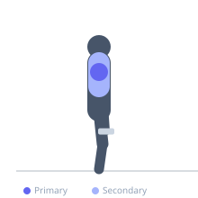

Exercise guide / W-Raises
W-Raises
W-raises are a prone shoulder rehabilitation and strengthening exercise where the arms form a W shape at the top of the movement. Lying face down or bent over, the lifter externally rotates and raises the arms to replicate the shape of the letter W. This movement specifically targets the posterior deltoid, infraspinatus, and middle trapezius, making it valuable for rotator cuff health and postural correction.
Primary muscles
deltoid posterior
infraspinatus
Secondary muscles
trapezius middle
rhomboid major
teres minor
Equipment
No Equipment (Bodyweight)
Optional
Dumbbell (Fixed)


Starting position
- Lie prone (face down) on a bench or floor. Arms hang toward the floor or rest alongside the torso. If using light dumbbells, hold them in each hand.
Setup
- No equipment needed if using bodyweight. If using light dumbbells, select very light weights (1–5 kg). Can also be performed standing with a hinge.
Steps
- Step 1: Lie face down on a bench or floor with arms hanging down.
- Step 2: Bend the elbows to 90 degrees so the forearms hang perpendicular to the floor.
- Step 3: Externally rotate the shoulder by raising the forearms upward so the hands are now at forehead level — the arms now form a W shape.
- Step 4: Squeeze the rear delts and middle traps at the top, then lower the arms back to the hanging position.
Coaching cues
- Think 'elbows wide, forearms up' to get the W shape
- Keep the neck long and trap-free — this is a mid-trap and rear delt exercise
Breathing
- Exhale as you raise into the W position; inhale on the return.
Range of motion
- Raise until the forearms are approximately horizontal, forming a clear W shape. Full external rotation at the top.
Tempo
- 2-2-2-0 (hold 2 seconds at top)
Common mistakes
- Raising too fast with momentum instead of using controlled muscle contraction
- Shrugging the upper traps — keep the neck long
Safety
- Use very light or no additional weight — this is a rotator cuff and postural exercise
Training
- endurance: 12–20 reps
- endurance: 3–4 sets
- Rest: {'endurance': 45}